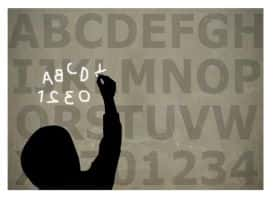
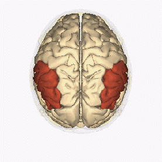

阅读障碍

本词条含有许多与医学、精神医学、心理学以及相关衍生方面的信息。
仅供参考，不能替代专业医师的诊断和治疗方案。如果有就诊需求请立即联系相关医师。
定义

阅读障碍（英语：Dyslexia、reading disorder、alexia）是一种影响阅读和书写的学习障碍[1][2]。
简介
阅读障碍的影响程度因人而异，常见表现包括拼写词语缓慢、阅读速度慢、书写困难、在内心拼读词语不流畅、朗读时发音错误以及阅读理解障碍[3][4]。这些问题通常在学校首次被察觉[2]。这些困难并非因缺乏学习意愿所致，患者往往具有正常的学习动力[3]。
阅读障碍常常与注意缺陷多动障碍（ADHD）、发育性语言障碍及计算障碍共存[5]。其成因被认为是遗传因素与环境因素共同作用的结果，部分病例呈现家族遗传性[2][3]。由脑外伤、中风或痴呆引发的阅读障碍则称为“获得性阅读障碍”[1]。根本机制源于大脑语言处理通路的神经发育差异[3]。
对其的诊断需通过一系列记忆、视知觉、拼写和阅读能力的标准化评估[6]。需注意，阅读障碍不是由听力、视力、智力问题或教育机会不足等问题导致的读写困难[2]。
症状
在幼童期，发展性阅读障碍症状在可能表现为语言习得较晚和语音发声困难[7]。一个常见的误解是将阅读障碍与镜像书写或倒读词语直接关联，但这些现象其实是许多儿童学习读写过程中的常见阶段[8]，并非阅读障碍的决定性特征[7]。
在学龄期阅读障碍的患者可能表现出以下特征：难以识别或生成押韵词语、难以数出单词的音节数[9]；在单词的音素分割（如将cat分解为/k/、/æ/、/t/）或音素混合方面存在困难，反映出音素意识不足[10]。此外，患者常伴有命名提取困难和拼写能力差，这和其母语书写系统的编码能力有关[7][11]。
这些困难会延续至青春期和成年期，可能会表现为概括故事、记忆、朗读或学习外语方面的障碍。成人阅读障碍者通常具备较为正常的的阅读理解能力，但阅读速度往往较慢，在拼写测试或生造词朗读中表现较弱[12]。
病因

自 1881 年首次发现阅读障碍以来，研究人员一直在努力寻找其原因[13][14]。目前对其研究涉及神经发育、遗传及环境因素的复杂交互等方面。
神经科学
神经影像学的研究显示，患者大脑左半球与阅读相关的区域（如颞下回）常出现激活不足或结构差异[15][16]，其中左侧颞叶和枕叶的交界区存在较为一致的激活不足[17][18]。小脑的肌肉运动障碍和参与读写的自动化理论虽被提出，但缺乏充分证据支持[19][20]。
遗传学
遗传方面，多个基因（如DCDC2[21]、KIAA0319[22]、DYX1C1[23]）与阅读障碍相关，这些基因可能影响胎儿期大脑皮层发育，导致大脑皮层的微小畸形[24]。有双胞胎研究表明，阅读能力受遗传与环境共同调节。且在支持性环境（如高质量教学、良好照护）下，因环境差异的减少，遗传因素的作用更为凸显[25]。
基因与环境的相互作用
语言特性亦影响阅读障碍的表现：英语、法语等拼写与发音对应复杂的语言学习难度较高，而西班牙语、意大利语等相对简单的语言对阅读障碍者相对友好[26]；表意文字语言（如汉语）则因符号过多而带来额外的挑战[27]。
同义词
失读症，诵读困难，读写障碍，阅读困难，发育性诵读困难，特定性阅读障碍
参考资料
- ↑ 1.0 1.1 "Dyslexia Information Page". National Institute of Neurological Disorders and Stroke. 2 November 2018. Archived from the original on 4 January 2017.
- ↑ 2.0 2.1 2.2 2.3 Siegel LS (November 2006). "Perspectives on dyslexia". Paediatrics & Child Health. 11 (9): 581–7. doi:10.1093/pch/11.9.581. ISSN 1205-7088. PMC 2528651. PMID 19030329.
- ↑ 3.0 3.1 3.2 3.3 "What are reading disorders?". National Institutes of Health. 1 December 2016.
- ↑ "What are the symptoms of reading disorders?". National Institutes of Health. 1 December 2016.
- ↑ Sexton CC, Gelhorn HL, Bell JA, Classi PM (November 2012). "The Co-occurrence of Reading Disorder and ADHD: Epidemiology, Treatment, Psychosocial Impact, and Economic Burden". Journal of Learning Disabilities. 45 (6): 538–564. doi:10.1177/0022219411407772. PMID 21757683. S2CID 385238.
- ↑ "How are reading disorders diagnosed?". National Institutes of Health. Archived from the original on 2 April 2015. Retrieved 15 March 2015.
- ↑ 7.0 7.1 7.2 Handler SM, Fierson WM, Section on O, Council on Children with D, American Academy of O, American Association for Pediatric Ophthalmology and S, American Association of Certified O (March 2011). "Learning disabilities, dyslexia, and vision". Pediatrics. 127 (3): e818–56. doi:10.1542/peds.2010-3670. PMID 21357342. S2CID 11454203.
- ↑ Lilienfeld SO, Lynn SJ, Ruscio J, Beyerstein BL (15 September 2011). 50 Great Myths of Popular Psychology: Shattering Widespread Misconceptions about Human Behavior. John Wiley & Sons. pp. 88–89. ISBN 978-1-4443-6074-5. Archived from the original on 9 January 2017. Retrieved 19 May 2016.
- ↑ "Dyslexia and Related Disorders" (PDF). Alabama Dyslexia Association. International Dyslexia Association. January 2003. Archived (PDF) from the original on 4 March 2016. Retrieved 29 April 2015.
- ↑ Peer L, Reid G (2014). Multilingualism, Literacy and Dyslexia. Routledge. p. 219. ISBN 978-1-136-60899-5. Archived from the original on 9 January 2017.
- ↑ Shaywitz, Sally E., Shaywitz, Bennett A. (2013). "Chapter 34 Making a Hidden Disability Visible: What Has Been Learned from Neurobiological Studies of Dyslexia". In Swanson, H. Lee, Harris, Karen R., Graham, Steve (eds.). Handbook of Learning Disabilities (2 ed.). Guilford Press. ISBN 978-1-4625-0856-3. Archived from the original on 9 January 2017.
- ↑ Jarrad L (October 2013). "Procedural learning is impaired in dyslexia: evidence from a meta-analysis of serial reaction time studies". Research in Developmental Disabilities. 34 (10): 3460–76. doi:10.1016/j.ridd.2013.07.017. PMC 3784964. PMID 23920029.
- ↑ Berkhan O (1917). "Über die Wortblindheit, ein Stammeln im Sprechen und Schreiben, ein Fehl im Lesen" [About word blindness, adyslalia of speech and writing, a weakness in reading]. Neurologisches Centralblatt (in German). 36: 914–27.
- ↑ Reid, Gavin, Fawcett, Angela, Manis, Frank, Siegel, Linda (2008). The SAGE Handbook of Dyslexia. SAGE Publications. p. 127. ISBN 978-1-84860-037-9. Archived from the original on 9 January 2017.
- ↑ Whitaker, Harry A. (2010). Concise Encyclopedia of Brain and Language. Elsevier. p. 180. ISBN 978-0-08-096499-7. Archived from the original on 9 January 2017.
- ↑ Pammer K (January 2014). "Brain mechanisms and reading remediation: more questions than answers". Scientifica. 2014 802741. doi:10.1155/2014/802741. PMC 3913493. PMID 24527259.
- ↑ Richlan F, Kronbichler M, Wimmer H (2011). "Meta-analyzing brain dysfunctions in dyslexic children and adults". NeuroImage. 56 (3): 1735–1742. doi:10.1016/j.neuroimage.2011.02.040. ISSN 1053-8119. PMID 21338695. S2CID 13135886.
- ↑ Martin A, Kronbichler M, Richlan F (2016). "Dyslexic brain activation abnormalities in deep and shallow orthographies: A meta-analysis of 28 functional neuroimaging studies". Human Brain Mapping. 37 (7). Wiley: 2676–2699. doi:10.1002/hbm.23202.
- ↑ Cain K (2010). Reading development and difficulties (1st ed.). TJ International. p. 134. ISBN 978-1-4051-5155-9. Retrieved 21 March 2015.
- ↑ Levav I (2009). Psychiatric and Behavioral Disorders in Israel: From Epidemiology to Mental health. Green Publishing. p. 52. ISBN 978-965-229-468-5. Retrieved 21 March 2015.
- ↑ Marshall, Chloë R. (2012). Current Issues in Developmental Disorders. Psychology Press. pp. 53–56. ISBN 978-1-136-23067-7. Archived from the original on 9 January 2017.
- ↑ Paracchini S, Thomas A, Castro S, Lai C, Paramasivam M, Wang Y, Keating BJ, Taylor JM, Hacking DF, Scerri T, Francks C, Richardson AJ, Wade-Martins R, Stein JF, Knight JC, Copp AJ, LoTurco J, Monaco AP (15 May 2006). "The chromosome 6p22 haplotype associated with dyslexia reduces the expression of KIAA0319, a novel gene involved in neuronal migration". Human Molecular Genetics. 15 (10): 1659–1666. doi:10.1093/hmg/ddl089. hdl:11858/00-001M-0000-0012-C979-F. PMID 16600991.
- ↑ Rosen, Glenn D. (2013). The Dyslexic Brain: New Pathways in Neuroscience Discovery. Psychology Press. p. 342. ISBN 978-1-134-81550-0. Archived from the original on 9 January 2017.
- ↑ Faust, Miriam (2012). The Handbook of the Neuropsychology of Language. John Wiley & Sons. pp. 941–43. ISBN 978-1-4443-3040-3. Archived from the original on 9 January 2017
- ↑ Pennington BF, McGrath LM, Rosenberg J, Barnard H, Smith SD, Willcutt EG, Friend A, Defries JC, Olson RK (January 2009). "Gene × Environment Interactions in Reading Disability and Attention-Deficit/Hyperactivity Disorder". Developmental Psychology. 45 (1): 77–89. doi:10.1037/a0014549. PMC 2743891. PMID 19209992.
- ↑ Paulesu, Eraldo; Brunswick, Nicola and Paganelli, Federica (2010). "Cross-cultural differences in unimpaired and dyslexic reading: Behavioral and functional anatomical observations in readers of regular and irregular orthographies. Chapter 12 in Reading and Dyslexia in Different Orthographies : 266. Archived 9 January 2017 at the Wayback Machine. Eds. Nicola Brunswick, Siné McDougall, and Paul de Mornay Davies. Psychology Press. ISBN 9781135167813
- ↑ Snowling MJ, Hulme C (1 May 2012). "Annual Research Review: The nature and classification of reading disorders – a commentary on proposals for DSM-5". Journal of Child Psychology and Psychiatry, and Allied Disciplines. 53 (5): 593–607. doi:10.1111/j.1469-7610.2011.02495.x. PMC 3492851. PMID 22141434.